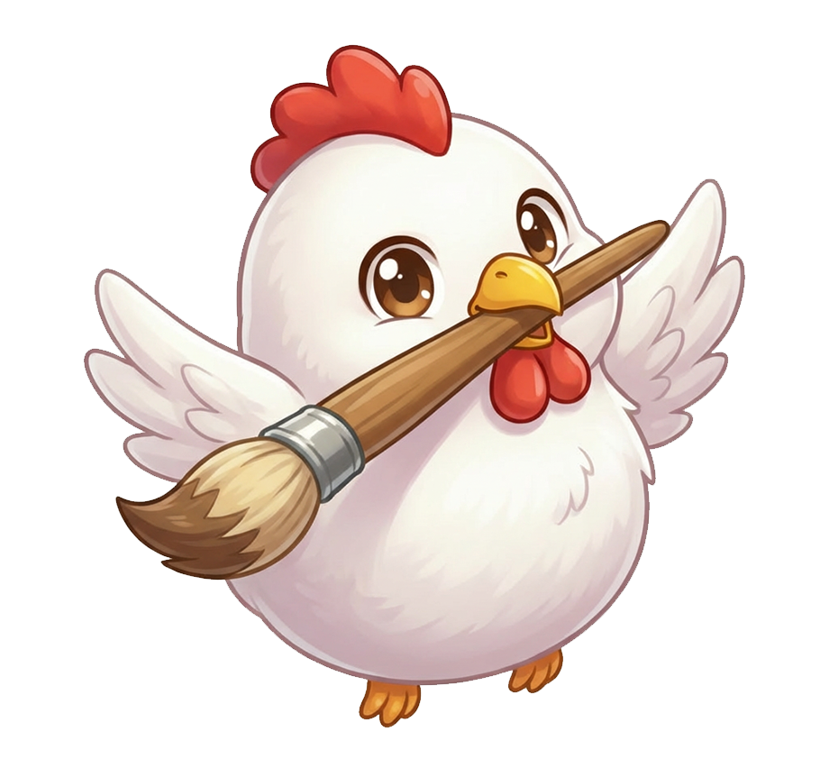

コッココース（応用技術習得コース）
← 資料に戻るコッココースは、基礎技術を習得された方や、より高度なリペア技術の習得を目指す方に向けた応用技術習得コースです。講習は6日間と2日間の計8日間に分けて実施し、実践を重ねながら対応できる補修領域を広げていきます。
本コースでは、一般的な補修に加えて、建材シートの張り替え、建具の陥没補修、石材の補修など、より専門性の高い技術についても学びます。さまざまな補修技術と知識を体系的に習得することで、現場ごとに適切な対応ができる実践力を身につけることを目的としています。
また、講習終了後の技術定着をサポートするため、添削キットによる作業添削を計5回実施します。反復練習と講師からのフィードバックを通じて、補修精度の向上と技術の定着を図ります。
カリキュラムには、各受講者の習熟度に応じた弱点克服トレーニングも含まれており、それぞれの成長段階に合わせて技術を伸ばしていくことができます。
受講者一人ひとりが確実に技術を習得できるよう、講習は少人数制で実施しています。より幅広い補修に対応できる技術力を身につけ、現場での対応力を高めたい方に向けたコースです。
